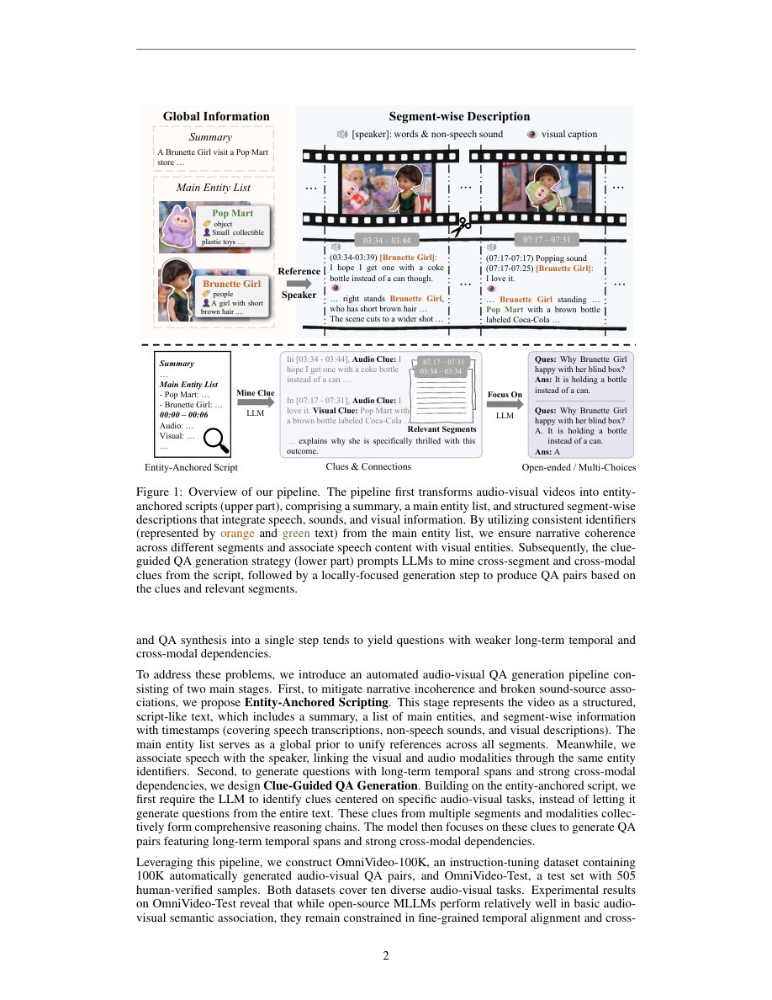

#1
★ 7/10
OmniVideo-100K: A Dataset for Audio-Visual Reasoning through Structured Scripts and Evidence Chains
OmniVideo-100K：通过结构化脚本与证据链实现音视频推理的数据集

图 Figure · Page 2 of paper
🎯 新数据集让AI真正理解视频中声音与画面的深层联系
A new 100K dataset teaches AI to reason across audio and video together using structured scripts and clue-guided questions.
🗣️ 一句话比喻 · Plain-English Analogy就像一个优秀的侦探在破案前，会先列出所有嫌疑人的清单，再把不同时间、地点的线索串联起来——而不是每次只看一张照片就下结论。这篇论文让AI也学会了这种"先建档案、再串线索"的推理方式来理解视频。Think of it like a detective who, before answering any questions about a crime, first writes down a full list of all the characters involved and then connects clues from different scenes — instead of just staring at one photo at a time. This paper trains AI to watch videos the same smart, connected way.
| 维度 | 中文 | English |
|---|---|---|
| ❓ 待解决 的问题 |
现有AI在理解视频时，往往把声音和画面分开处理，就像看电影时把音轨和字幕完全割裂——AI不知道"这个声音是画面里哪个人/物发出的"。此外，现有方法把长视频切成短片段分别描述，导致同一个人物在不同片段里被描述得前后矛盾。最终生成的问答题只关注局部片段，缺乏跨时间段的深层推理，题目质量很低。 | Existing AI systems for video question answering treat audio and visuals separately — like watching a movie with the sound and picture completely disconnected, so the AI can't tell which person or object made a particular sound. They also chop long videos into short clips and describe each one independently, causing the same character to be described inconsistently across clips. The result is shallow, locally-focused questions that miss big-picture reasoning across the whole video. |
| 💡 解决 的亮点 |
• 提出"实体锚定视频脚本化"：先建立视频中主要角色/物体的全局清单，让整个视频描述前后一致，并重建声音与画面的关联 • 提出"线索引导式问答生成"：AI先主动挖掘跨片段、跨模态的关键线索，再基于这些高价值线索生成有深度的问答题 • 构建了10万条指令微调数据集OmniVideo-100K，以及人工验证的测试集OmniVideo-Test，填补了高质量音视频推理数据的空白 | • Entity-Anchored Scripting: builds a global "cast list" of key people and objects in a video to keep descriptions consistent and reconnect sounds to their visual sources throughout the whole video • Clue-Guided QA Generation: forces the AI to first hunt for cross-clip, cross-modal clues before writing questions — producing deeper, more meaningful QA pairs • Delivers a 100K instruction-tuning dataset plus a human-verified test set, filling a major gap in high-quality audio-visual reasoning benchmarks |
| 🧪 实验 内容 |
研究者用OmniVideo-100K数据集分别对三个已有多模态大模型（VITA-1.5、Qwen2.5-Omni-7B、Qwen3-Omni-30B）进行微调，在自建的人工验证测试集OmniVideo-Test上评估效果，同时在两个公认的权威基准测试Daily-Omni和JointAVBench上验证泛化能力。对比基线为这三个模型的原始版本（未经微调）。 | The researchers fine-tuned three existing multimodal large language models — VITA-1.5, Qwen2.5-Omni-7B, and Qwen3-Omni-30B — on the new OmniVideo-100K dataset. They then evaluated performance on their own human-verified OmniVideo-Test benchmark, and further tested generalization on two established public benchmarks, Daily-Omni and JointAVBench. The baselines were the same three models before any fine-tuning on OmniVideo-100K. |
| 📊 实验 结果 |
在OmniVideo-Test上，微调后模型性能提升最高达20.59%；在外部基准Daily-Omni和JointAVBench上，泛化提升最高达12.64%，说明数据集不只是让模型"死记硬背"，而是真正提升了音视频推理能力。三个规模不同的模型均获得显著提升，验证了方法的普适性。 | Fine-tuning on OmniVideo-100K boosted model performance by up to 20.59% on the OmniVideo-Test benchmark. On external public benchmarks (Daily-Omni and JointAVBench), improvements reached up to 12.64%, showing genuine generalization rather than just memorization. All three tested models — of different sizes and architectures — showed meaningful gains, confirming the dataset's broad effectiveness. |
| 🏁 结论 | 本文证明了通过"先建全局实体清单、再挖跨模态线索"的数据生成流水线，可以自动制造出高质量的音视频推理训练数据，并显著提升多种多模态大模型的深层推理能力。OmniVideo-100K为音视频理解领域提供了一个新的高质量基准和训练资源。 | This paper proves that a smarter data-generation pipeline — one that maintains a global entity list and mines cross-modal clues before writing questions — can produce training data that meaningfully improves AI's ability to reason across audio and video. OmniVideo-100K sets a new benchmark for the field and offers a practical, scalable recipe for building better multimodal AI. |
| 🔗 论文 链接 |
arXiv: 2606.14702v1 · 📥 PDF | |
⚙️ Method · 方法详解
这套方法分两步走。第一步，把整段视频转化为一份结构化"剧本"：先列出视频里出现的所有主要实体（人、物、声源），作为全局参照，再逐段描述每段的音视频内容，保证同一实体全程描述一致，声音也能对应到具体的视觉来源。第二步，让AI先从剧本里"找线索"——主动搜索哪些时刻在视觉和听觉上有有趣的跨段联系，然后基于这些线索生成需要深层推理的问答题，而不是只问局部片段里发生了什么。最终用这条流水线批量生产了10万条高质量训练数据。
The approach works in two stages. First, instead of blindly chopping a video into pieces, it converts the whole video into a structured "screenplay": it lists all key entities (people, objects, sound sources) as a global reference, then writes unified audio-visual descriptions for each segment that stay consistent thanks to that entity list. Second, rather than immediately writing questions, it makes the AI play detective — scanning the full script to find valuable cross-segment, cross-modal clues (e.g., a sound in minute 2 explained by a visual in minute 7), and only then crafting questions around those clues. This pipeline was run at scale to produce 100K training samples.
🌟 Why It Matters · 为什么重要
随着AI视频助手（如视频摘要、智能监控、教育辅助）越来越普及，能真正理解"声音来自哪里、与画面有什么联系"的AI将大幅提升用户体验和安全性。这项工作提供了一套可复用的数据生产流水线，未来其他研究团队可以用它快速构建更高质量的多模态训练数据，加速整个领域发展。
As AI-powered video tools (video summarizers, smart security cameras, educational assistants) become everyday products, the ability to truly connect what's seen and heard in a video will make them far more accurate and trustworthy. This paper also provides a reusable data-generation recipe that other researchers can apply to quickly build better multimodal training sets, accelerating progress across the whole field.